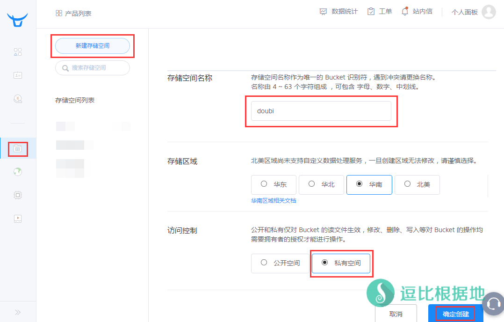
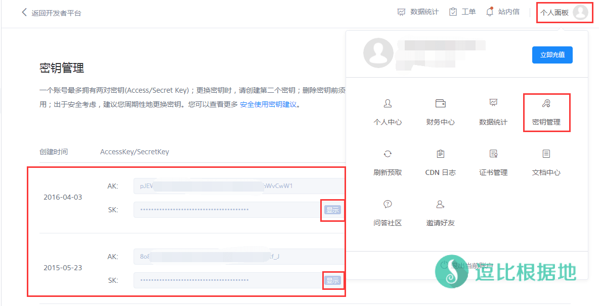

认真的做网站，不仅需要一个稳定的主机(VPS)，还需要定时备份自己的网站数据和数据库，毕竟再稳定的主机(VPS)也有可能出问题，不过大部分情况下都是自己折腾导致的问题，所以定时备份是必不可少的。
早在2015年，我在寻找备份方法的时候，就找到了这个备份网站文件+数据库到七牛的脚本。
本脚本Github项目地址：https://github.com/ccbikai/backuptoqiniu
七牛新建储存空间+获取七牛密匙
要看这个教程，首先你要有一个 七牛云的账号，没有就注册一个。
注意：七牛注册后会送1G流量和空间，还需要实名认证后，才会送10G流量和空间，有实名认证洁癖的不需要往下面看了。
注册并实名认证后，打开 七牛云控制面板页面。
然后点击控制台左边侧栏的 对象储存，然后点击 新建储存空间。
然后输入 储存空间名称(后面需要使用)、选择 储存区域（随便哪个都行）、访问控制选择 私有空间 ，确定无误后点击 确定创建 按钮。

然后我们还需要七牛密匙，点击七牛控制面板右上角 个人面板 - 密匙管理。
然后会看到你的密匙，如果没有请创建，我是以前创建了两个，随便选一个就行了。
复制 AK和SK两行文本 ，随后脚本有用。

安装环境
首先这个脚本需要用到 python，所以先确定你VPS的 python 版本是否是2.7以上。
python -V
如果低于 2.7 版本，那你就需要升级python版本，才能继续看教程了。
脚本需要用到 zip 解压缩，所以需要安装 zip和unzip 。
CentOS系统： yum update && yum install -y zip unzip Debian/Ubuntu系统： apt-get update && apt-get install -y zip unzip
接下来就是安装和设置脚本了。
安装脚本
wget --no-check-certificate -O backuptoqiniu.zip https://softsmirror.cf/Website/backuptoqiniu.zip unzip backuptoqiniu.zip && cd backuptoqiniu python setup.py install
安装很快，如果没有报错，那么就继续下一步。
设置脚本
在 backuptoqiniu 文件夹中有一个 backuptoqiniu.sh 脚本文件，里面设置的是配置信息。
我们可以把这个文件通过SFTP下载到本地修改，也可以在SSH用 VI 中修改。
vi backuptoqiniu.sh
打开文件后，我们只要看前半部分就行了。
## 备份配置信息 ## # 备份名称，用于标记 BACKUP_NAME="qiniu" # 备份目录，多个请空格分隔 BACKUP_SRC="/home/wwwroot/xxx.xxx" # Mysql主机地址 MYSQL_SERVER="localhost" # Mysql用户名 MYSQL_USER="root" # Mysql密码 MYSQL_PASS="mysqlpassword" # Mysql备份数据库，多个请空格分隔 MYSQL_DBS="dbname" # 备份文件临时存放目录，一般不需要更改 BACKUP_DIR="/tmp/backuptoqiniu" # 备份文件压缩密码确保压缩包的安全 BACKUP_FILE_PASSWD="doub.io" ## 备份配置信息 End ## ## 七牛配置信息 ## #存放空间对应我们在七牛上创建的文件夹 QINIU_BUCKET="doubi" QINIU_ACCESS_KEY="ACCESS_KEY" QINIU_SECRET_KEY="SECRET_KEY" ## 七牛配置信息 End ##
根据中文注释提示来修改各参数设置。
需要注意的是如果你要备份多个目录，那 BACKUP_SRC 参数要用空格隔开多个目录，这样写：
BACKUP_SRC="/home/wwwroot/xxx.xxx /home/wwwroot/yyy.yyy /home/wwwroot/zzz.zzz"
数据库也一样，假如你有三个数据库，名称分别为 xxx yyy zzz ，那么就这样写：
MYSQL_DBS="xxx yyy zzz"
重点说的是 七牛配置信息。
在上面我们已经 新建储存空间 了，而当时填写的 储存空间名称 就是这里的 QINIU_BUCKET 参数。
QINIU_ACCESS_KEY 对应的是 上面获取七牛密匙的 AK 代码。
QINIU_SECRET_KEY 对应的是 上面获取七牛密匙的 SK 代码。
这三个一定不能填写错误，否则会无法链接到七牛云储存空间来上传备份文件。
设置完毕后，我们可以尝试运行脚本测试一下。
chmod +x backuptoqiniu.sh # 赋予脚本执行权限 bash backuptoqiniu.sh
正常情况下，应该提示是这样的：
[email protected]:~# bash backuptoqiniu.sh start dump mysql dump ok start tar tar ok start upload upload ok backup clean done
如果提示正常，可以去 七牛控制面板 查看是否上传成功。
设置定时任务
既然是备份，那就要设置定时任务，定时备份，我用的是 crontab ，如果你没有安装请安装：
CentOS系统： yum install -y crond Debian/Ubuntu系统： apt-get install -y cron
然后因为各VPS的时区和VPS本地有关，所以你需要把VPS的时区改为北京时区。
cp /usr/share/zoneinfo/Asia/Shanghai /etc/localtime
可能会提示是否覆盖，根据提示输入 y 或者 yes 。
设置完VPS的时区还不行，还需要重启一下 crontab ，这样 crontab 才会使用VPS的时区。
CentOS系统： /etc/init.d/crond restart Debian/Ubuntu系统： /etc/init.d/cron restart
以上都设置完了，就可以开始设置 定时任务了。
假设你上面的安装脚本步骤都是在 root 目录下执行的，那么你的 七牛脚本位置就是 /root/backuptoqiniu/backuptoqiniu.sh ，如果不是，那么请自行修改目录。
打开 crontab 编辑模式(如果crontab是vim编辑器，那么需要按 I键 进入编辑模式，如果是nano编辑器那么可以直接输入)，在最后加入下面的定时任务代码：
crontab -e # 下面是定时任务代码 0 2 * * * /bin/bash /root/backuptoqiniu/backuptoqiniu.sh
0 2 * * * 指的是，每天凌晨2点0分执行一次备份脚本。
* * * * * 分别对应的是 分钟 小时 日 月 星期 。
如果你要每隔 3天备份一次，那么改成 0 2 */3 * * ，这样就是每隔 3天凌晨2点0分执行一次。
更多的使用方法请百度谷歌 crontab定时用法。
当你添加完 定时任务代码后，
如果你的 crontab 是 vim编辑器，那么按 ESC键 退出编辑模式，然后输入 :wq 保存并退出。
如果你的 crontab 是 nano编辑器，那么按 Ctrl+X 退出，然后提示你内容已更改 是否保存，按 y键 ，然后再按 回车键 就好了。
本文章转载自：http://www.laozuo.org/2587.html ，当初也是看着个教程做的。
到这里，教程就结束了，有什么错误或者需要补充的可以在下面留言。
转载请超链接注明：逗比根据地 » Linux 网站文件+数据库 定时备份到七牛云储存 脚本
责任声明：本站一切资源仅用作交流学习，请勿用作商业或违法行为！如造成任何后果，本站概不负责！